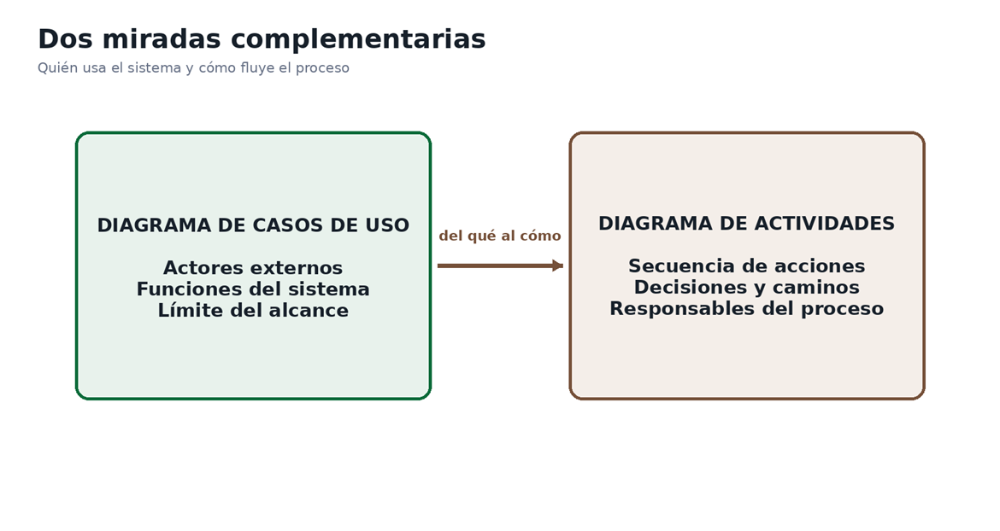
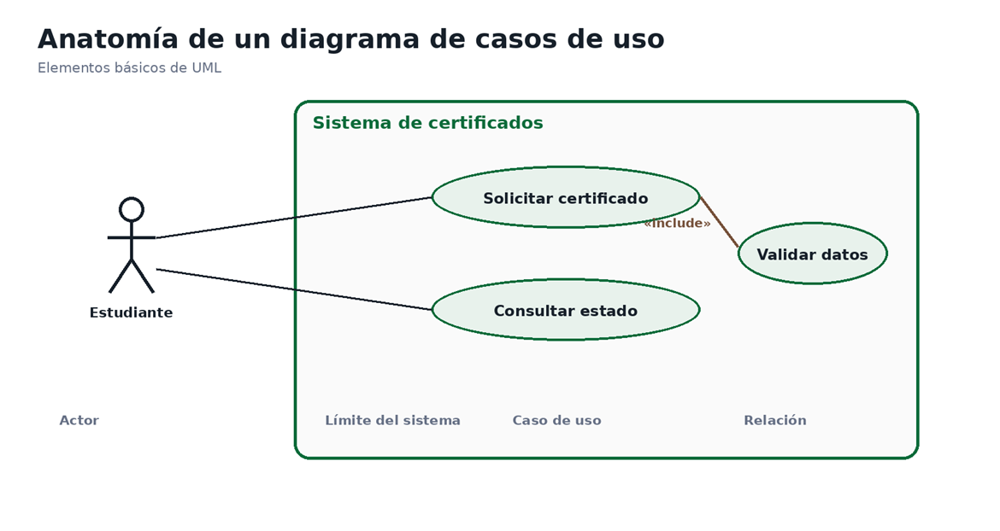

🚀 Diagramas de Casos de Uso y Actividades: El Plano Arquitectónico del Software
¡Bienvenido! 👋 Imagina que vas a construir una casa. Si solo le dices al maestro de obra "quiero una casa bonita con tres habitaciones", ¡cada quien imaginará algo totalmente distinto! 🏠 En el desarrollo de software ocurre lo mismo: los requerimientos escritos explican las necesidades del cliente, pero si no los visualizamos, el cliente imaginará un auto deportivo y el programador construirá un camión de carga. 😅
Para evitar confusiones y malentendidos, el Lenguaje Unificado de Modelado (UML) nos regala dos herramientas visuales súper poderosas y complementarias:
👤 Diagrama de Casos de Uso
Vista Externa (¿Quién y Qué?): Muestra los objetivos finales que los usuarios (actores) alcanzan a través del sistema. Define el alcance general sin entrar en detalles de pasos.
🔀 Diagrama de Actividades
Vista Interna (¿Cómo y En qué orden?): Desarrolla el flujo paso a paso de una tarea, mostrando decisiones, caminos alternos, repeticiones y quién realiza cada acción mediante carriles.
📊 Propósitos Complementarios del Modelado UML

Figura 1. Propósitos complementarios de los dos diagramas. Fuente: IA (2026).
✨ ¡Tu misión en este OVA: Te convertirás en un Arquitecto UML. Dominarás el diseño de actores, el uso correcto de <<include>> y <<extend>>, y modelarás flujos complejos con carriles de responsabilidad. ¡A dibujar requerimientos! 🚀
🎯 Objetivos de Aprendizaje
Al completar este OVA interactivo, serás capaz de dominar las siguientes habilidades de modelado funcional:
-
🧠
Diferenciación de Diagramas Diferenciar el propósito, los elementos y el alcance de un diagrama de casos de uso frente a un diagrama de actividades.
-
👤
Modelado de Casos de Uso Identificar actores, casos de uso, límites del sistema y relaciones de asociación, include y extend.
-
🔀
Modelado de Actividades y Carriles Representar acciones, decisiones, flujos alternos y responsabilidades mediante carriles (swimlanes).
-
🛠️
Construcción y Trazabilidad Construir diagramas formales a partir de requerimientos escritos y evaluarlos con criterios de claridad y trazabilidad.
Misión: Certificación en Modelado UML
Explora los acordeones, resuelve los acertijos de diagramas y acumula XP
Un Diagrama de Casos de Uso representa las funciones que ofrece un sistema desde la perspectiva de sus usuarios externos. Delimita el alcance sin mostrar el código interno. 📌

Figura 2. Elementos fundamentales: Actor, Caso de Uso, Límite y Asociación. Fuente: IA (2026).
Rol externo (persona, sistema o dispositivo) que interactúa con el sistema. Ejemplo: Estudiante.
Elipse que expresa un objetivo observable alcanzado por el actor. Ejemplo: Solicitar certificado.
Rectángulo que encierra los casos de uso y define las fronteras del sistema.
Línea continua que conecta al actor con los casos de uso en los que participa.
🏷️ Reglas de Oro para Nombrar Casos de Uso
| Enunciado Vago / Erróneo | Por qué está mal | Nombre Correcto (Verbo + Objeto) |
|---|---|---|
| "Certificados" | Es un sustantivo, no expresa una acción. | Solicitar certificado |
| "Gestionar información" | Es un término demasiado amplio e indeterminado. | Actualizar datos del estudiante |
| "Botón Enviar" | Describe un elemento visual, no una meta de negocio. | Registrar solicitud |
🏷️ Mini-Juego 1: Validador de Nombres UML +50 XP
Selecciona cuál de las siguientes expresiones cumple con la regla de redacción para un Caso de Uso:
Tutorial Práctico de Casos de Uso UML
🔍 Búsqueda sugerida: "Diagramas de casos de uso UML explicacion desde cero"
▶️ Ver recurso💡 Cómo activar este recurso:
Busca el recurso y dile esto a tu agente de IA en el chat:
✍️ Misiones Prácticas de Modelado UML
Pónte la camiseta de Arquitecto de Software y resuelve este reto de modelado para un sistema institucional.
🎮 Progreso de misiones
⭐ 0/100 XP🏅 Insignia desbloqueada: Modelador UML
💻 Reto: Sistema de Reserva de Equipos de Cómputo
Caso Práctico en EquipoEscenario: La institución implementará una plataforma donde el Estudiante consulta disponibilidad, elige fecha y equipo, envía la reserva y recibe confirmación. Si no hay disponibilidad, puede cambiar de fecha. El Encargado de laboratorio consulta las reservas y registra la entrega del equipo.
Parte A: Modelador de Casos de Uso
Parte B: Generador del Diagrama de Actividades (Reservar Equipo)
📝 Producto Esperado: Dos diagramas en limpio (Casos de Uso y Actividades con carriles) más documento de justificación técnica.
✔️ Evaluación de Conocimientos
Responde las 5 preguntas de dificultad progresiva para validar tu aprendizaje en modelado UML.
📖 Recursos para Profundizar
Explora los siguientes manuales y tutoriales recomendados sobre UML:
-
Video Tutorial: Casos de Uso en UML
Explicación en video sobre la identificación de actores, límites y casos de uso en proyectos reales.
Ir al recurso -
Guía Práctica de Diagramas de Actividades
Manual de referencia sobre decisiones, flujos paralelos y carriles de responsabilidad.
Ir al recurso -
Tutorial de Modelado UML: Include vs Extend
Artículos detallados sobre patrones de diseño y errores comunes en relaciones de inclusión y extensión.
Ir al recurso -
Material PDF de Ingeniería de Software (IREB)
Documento de lectura sobre estándares globales de especificación y modelado de requisitos.
Ir al recurso